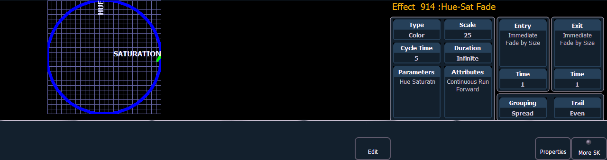

Color effects impact only color parameters. Hue and saturation offsets can be used which are represented in the horizontal and vertical axes of the graph in the effects editor. The {Parameters} key within a color effect displays the various color mechanisms used in any patched channels.
New color effects default to a circle. You can clear this and draw your own shape by pressing {Edit}>{Clear} and drawing on the graph with your finger or the mouse. Press {Apply} when you are done. Other pre-made color effects can be modified in the same manner. The green arrow indicates default direction of color shift, which can be modified in attributes.
